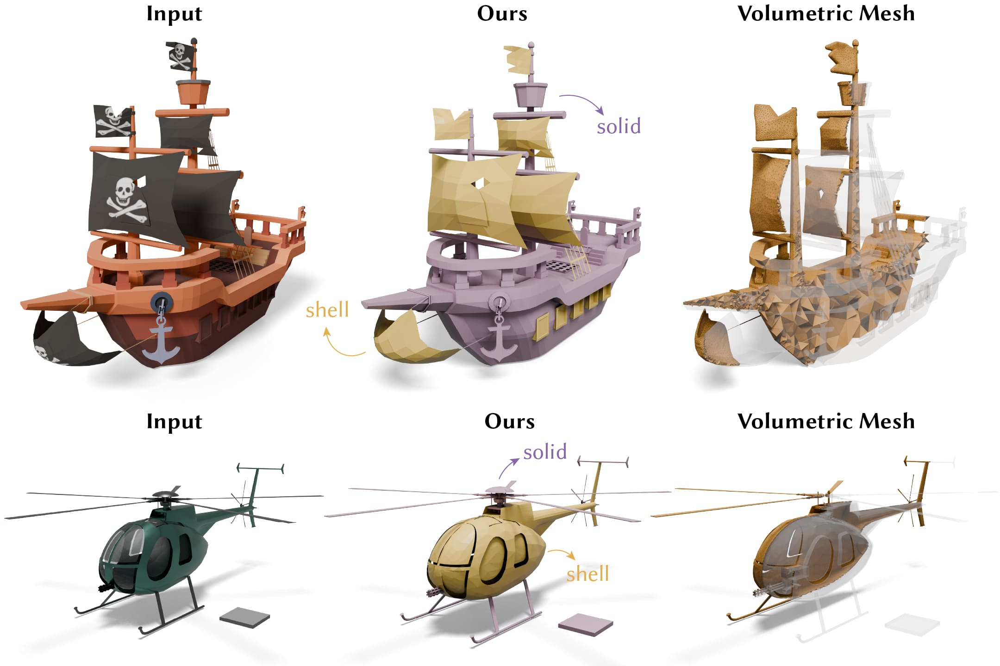
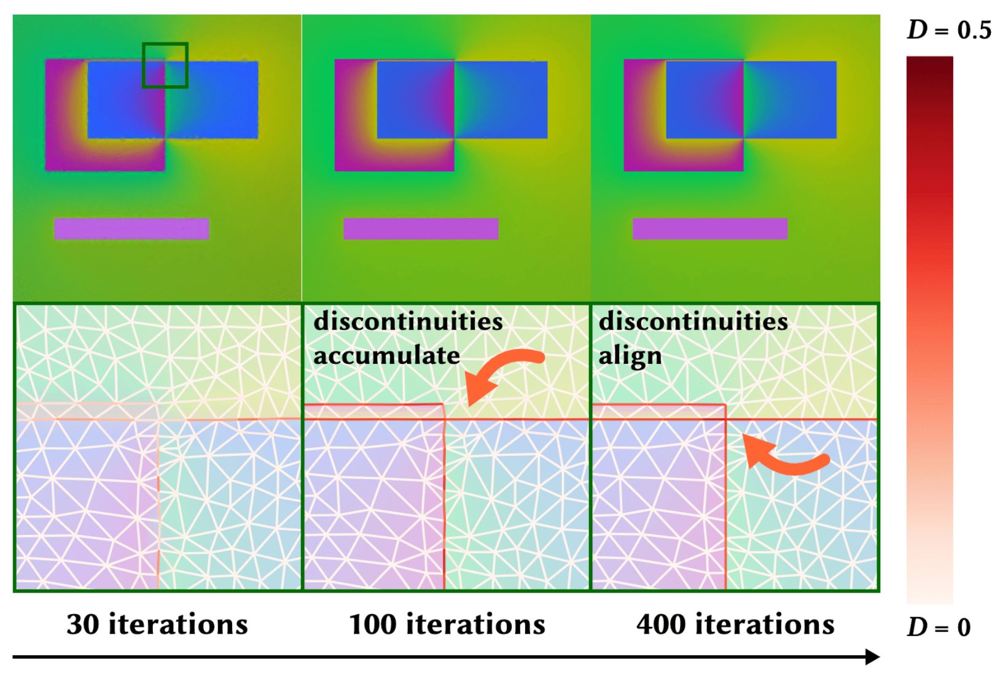
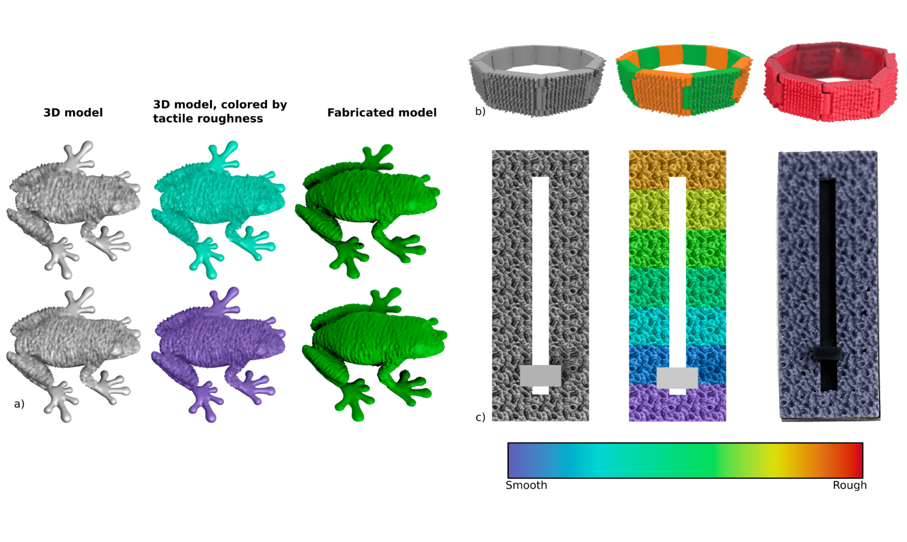

|
siqi.wang [AT] nyu [DOT] edu I am currently a Research Engineer at ByteDance. I obtained my Ph.D. (2025) in Computer Science at the Geometric Computing Lab of New York University, supervised by Prof. Daniele Panozzo and Prof. Denis Zorin. Earlier, I earned my B.Sc (2019) in Electrical Engineering from Shanghai Jiao Tong University in China. I also served as a research assistant at Dartmouth College with Prof. Xia Zhou and Prof. Bo Zhu. I have also spent time working for the Engine (Geometry) Group of Roblox as a research intern in 2024 and Adobe Research as a research scientist intern in 2022. Before graduate school, I was also a part of the Digital ART Laboratory at SJTU. My research focuses on computer graphics, geometric computing and physical simulation, including three key research themes: (1) Delve into an extensive domain within geometric modeling and processing, including automated mesh repairing for game engines, geometry simplification for SVG and vector graphics animation. (2) Bridge the gap between virtual and real-world applications, involving computer-aided shape design and optimization for a simulation purpose and high-fidelity anisotropic fluid simulations. (3) Emphasize the importance of simulation accuracy and efficiency with geometric approaches, such as the adaptive hp-refinements on volumetric meshes for physical simulations.
[New] I'm on the job market in Summer 2025. Feel free to contact
me if you know of a position for which I could be a fit.
CV | Google Scholar | LinkedIn | Github | ORCID |
|
|
|
| Aug | 2025 | Started my full-time position at ByteDance as a Research Engineer (Computer Graphics, Physics and Animation). |
| Aug | 2025 | Paper “Solid-Shell Labeling for Discrete Surfaces” accepted at SIGGRAPH Asia 2025. |
| July | 2025 | Successfully defended my Ph.D. thesis! üéâ |
| Feb | 2025 | Paper “2D Neural Fields with Learned Discontinuities” accepted at Eurographics 2025. |
| Sep | 2024 | Completed my Ph.D. thesis proposal! üéâ |
| Jun | 2024 | Started my internship at Roblox advised by Derek Liu, Janos Meny, Izak Grguric and Mehdi Rahimzadeh. |
| Dec | 2023 | Presented “Bézier Spline Simplification Using Locally Integrated Error” paper at SIGGRAPH Asia 2023 in Sydney. |
| Aug | 2023 | Paper “Bézier Spline Simplification Using Locally Integrated Error” accepted at SIGGRAPH Asia 2023. |
| May | 2023 | Presented “A Posteriori HP Adaptive FEM Solver for Physical Simulations” at Capital Graphics 2023. |
| July | 2022 | Presented “Vector Graphics Liquify” at the Dynamic Graphics Project (DGP), University of Toronto. |
| Jun | 2022 | Honored to be one of the WiGRAPH's Rising Stars in 2022. |
| May | 2022 | Started my internship at Adobe Research advised by Alec Jacobson. |
| Nov | 2021 | Passed my Ph.D. depth qualifying exam! üéâ |
| Sep | 2021 | Was awarded a DeepMind scholarship by the Department of Computer Science, New York University. |
| Aug | 2020 | Paper “Appearance-preserving Tactile Optimization” accepted at SIGGRAPH Asia 2020. |
| Aug | 2020 | Paper “An Adaptive Staggered-tilted Grid for Incompressible Flow Simulation” accepted at SIGGRAPH Asia 2020. |
| Sep | 2019 | My homepage is built today. |
|
For a complete list of publications, please visit my Google Scholar page. To explore my research by topic, please click the icons below. |
2D GraphicsGeometric ProcessingShape OptimizationPhysics-Based SimulationDeep Learning |
|
(*): Equal contribution |
|

|
Siqi Wang, Janos Meny, Izak Grguric, Mehdi Rahimzadeh, Denis Zorin, Daniele Panozzo, Hsueh-Ti Derek Liu
[SA 2025]
SIGGRAPH Asia 2025 Conference Papers
Oral presentation
paper | video | |
|
|
José E. Cruz Serrallés*, Ilias I. Giannakopoulos*, Siqi Wang*, Damien Chen, Daniel Zint, Daniele Panozzo, Denis Zorin, Riccardo Lattanzi preprint (2025) bioRxiv | |
|

|
Chenxi Liu, Siqi Wang, Matthew Fisher, Deepali Aneja, Alec Jacobson
[EG 2025]
Computer Graphics Forum (Eurographics 2025)Oral
presentation
arXiv | code | paper | project | |
|
|
Siqi Wang, Chenxi Liu, Daniele Panozzo, Denis Zorin, Alec Jacobson
[SA 2023]
SIGGRAPH Asia 2023 Conference Papers
Oral presentation
code | paper | slides | video | |
|
|
Siqi Wang, Zizhou Huang, Teseo Schneider, Daniele Panozzo, Denis Zorin code | slides | |
|

|
Chelsea Tymms, Siqi Wang, Denis Zorin
[SA 2020]
ACM Transactions on Graphics (SIGGRAPH Asia 2020)
Oral presentationcode | paper | |

|
Yuwei Xiao, Szeyu Chan, Siqi Wang, Bo Zhu, Xubo Yang
[SA 2020]
ACM Transactions on Graphics (SIGGRAPH Asia 2020)
Oral presentationpaper | video | |
|
|
Ruibo Liu, Qijia Shao, Siqi Wang, Christina Ru, Devin Balkcom, Xia Zhou
[UbiComp 19]
Proceedings of the ACM on Interactive, Mobile, Wearable and
Ubiquitous Technologies (IMWUT) 2019
Oral presentation
paper | Featured in NSF "4 Awesome Discoveries This Week" | |
|
|
| Aug 2025 - Now |
ByteDance, San Jose, CA Research Engineer |
| May 2024 - Aug 2024 |
Roblox Engine (Geometry) Group, San Mateo, CA Research Intern |
| May 2022 - Dec 2022 |
Adobe Research, San Jose, CA Research Scientist Intern |
|
|
| CSCI-GA.3033-018: Geometric Modeling: Teaching Assistant, NYU, Spring 2021. |
| CSCI-GA.2565-001: Machine Learning: Grader, NYU, Spring 2022. |
|
|
| Conference Reviewer | SIGGRAPH Asia 2025, 2024 |
| Journal Reviewer | IMWUT |
|
|
| WiGRAPH's (Women in Computer Graphics Research) Rising star (2022) |
| DeepMind Scholarship (2021) |
| MacCracken Fellowship, New York University University (2019) |
|
Outstanding Graduates Honor of Shanghai (2019)
|
|
Hongyi Scholarship, Undergraduate Research Overseas (2018)
|
|
First-class Scholarship of Lee Fushou Fund (2018)
|
|
Scholarship of the Temasek Foundation International Leadership Enrichment and Regional Networking
Programme (TFI LEaRN) (2017)
|
| First Prize in the Undergraduate Mathematical Contest in Modeling of China (2016) |
| Award for Outstanding Student Cadres, Shanghai Jiao Tong University (2016) |
|
Academic Excellence Scholarship, Shanghai Jiao Tong University (2016 - 2018)
|
|
First-Prize in the High School Students Mathematics Contest (Provincial Prize) (2014)
|
|
|
|
|